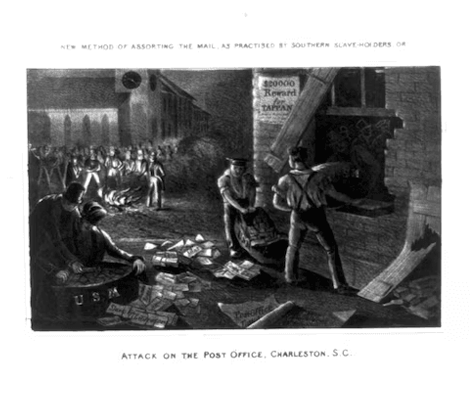
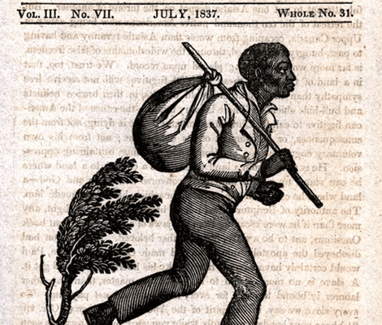
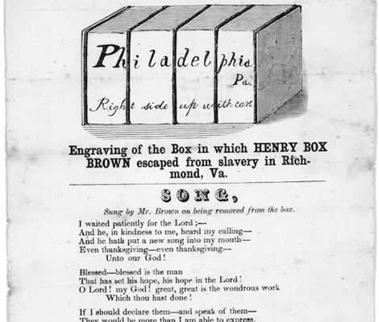

NATIONAL GEOGRAPHIC
This magician escaped slavery by mailing himself to freedom
HISTORY & CULTURE
- 
- 
- 
On an early spring morning in 1849, an enslaved Black man named Henry Brown folded himself into a three-foot by two-foot wooden crate. Twenty-seven hours and 350 miles later, he arrived at the home of William Johnson, a Philadelphia barber who collaborated with the Underground Railroad, a network of people, safe houses, and routes that guided enslaved people to freedom.
The American postal service was on its way to becoming an advanced information highway, and abolitionists had quickly grasped its potential. As they flooded southern states with anti-slavery writings, those in favor burned bags of mail and postmasters picked out abolitionist materials. The fledgling postal service was thrust into the center of a national argument about free speech, censorship, and enslavement.
Amid this turmoil, a private shipping company called Adams Express delivered Brown to Johnson’s house. Brown was born into slavery and spent his first 35 years as the legal property of a Virginia plantation owner. In August 1848 he came home from work to discover his wife and their three children had been sold to a minister in North Carolina. As he prayed for guidance, he later wrote, he heard the words: "Go and get a box, and put yourself in it."
When he emerged from his journey, Brown was a sensation with a nickname to match: Henry “Box” Brown. His novel escape made him a folk hero, a wanted fugitive, and a public speaker. To Hollis Robbins, a scholar of African American literature, Brown became the best example of the power of the United States mail delivery.
In the mid-2000s, Robbins attended a lecture about Henry Brown at Yale University. The speaker compared Brown’s journey to the Middle Passage, the route that brought enslaved men and women on cramped, disease-ridden ships from Africa to the New World. As the lecturer spoke about Box’s suffering en route to Pennsylvania the cramped conditions, the flips, the rough treatment of the box Robbins was dismayed.
As she saw it, postal workers were “the deliverers of freedom.” Robbins, whose grandfather worked aboard the Railway Mail Service, was doing her dissertation on American bureaucracies. One chapter, which she’d titled “Fugitive Mail,” was about Brown.
Colombia’s government now claims that it owns the San José wreck and all it contains, and culture minister Juan David Correo recently told Bloomberg that president Gustavo Petro wants it recovered by the end of his term in 2026.
For Robbins, now dean of the School of Arts & Humanities at Sonoma State University in California, advances in mail delivery made Brown’s escape possible and the postal service provided a tool to chip away at slavery’s stronghold.
Early on, enslaved Africans had been used to deliver mail, but a rebellion led by enslaved people in the Caribbean sowed fear in the southern United States. In 1802, Postmaster General Gideon Granger laid out these concerns in a letter to a Georgia senator:
“The most active and intelligent [slaves] are employed as post riders…By traveling from day to day, and hourly mixing with people…they will acquire information. They will learn that a man’s rights do not depend on his color. They will, in time, become teachers to their brethren…One able man among them, perceiving the value of this machine, might lay a plan which would be communicated by your post riders from town to town and produce a general and united operation against you.”
Disruptive mail
By the mid-1830s, northern abolitionists had latched onto the postal system to advance their movement. At the time, about 100 newspapers that advocated abolition were being printing in the North. A campaign to deliver their arguments into the hands of editors, religious leaders, and other sympathetic individuals in the South resulted in a steady stream of newspapers, leaflets, and exposés headed south.
Mail bags carried activism to southern voters and enslaved men and women alike, revealing widespread criticism of slavery and encouraging the enslaved to rise against the system. It also brought details of life under bondage to the North. Slavery, wrote Ralph Waldo Emerson, “does not love the whistle of the railroad; it does not love the newspaper, the mailbag, a college, a book…
Comments :
- john Very good
- john Very good
Leave a Reply
Your email address will not be published. Required fields are marked*
Related posts:
-
 Cheeky otters are thriving in Singapore and adapting quickly to big city life
Cheeky otters are thriving in Singapore and adapting quickly to big city lifeSINGAPOREOn a grassy strip along the highway, a blur of brown fur moves quickly, a small head popping up every so often to check for danger. It’s a family of seven otters, likely on their way to their den at the Singapore Botanic Gardens.
View article -
 New York City has a turtle problem
New York City has a turtle problemNEW YORK CITYBright green and viscous, Morningside Pond looks like a vat of unappealing pea soup. Styrofoam cups and plastic bags cling to the pond’s edge, bound in place by bubbles of green foam.
View article -
 Wild boars make a home amid Hong Kong’s high rises and highways
Wild boars make a home amid Hong Kong’s high rises and highwaysHONG KONGOn a Wednesday morning in one of Hong Kong’s high-end residential areas, a large wild boar napped peacefully on the side of a road. It was seemingly oblivious to the rush hour traffic whizzing past mere feet away
View article